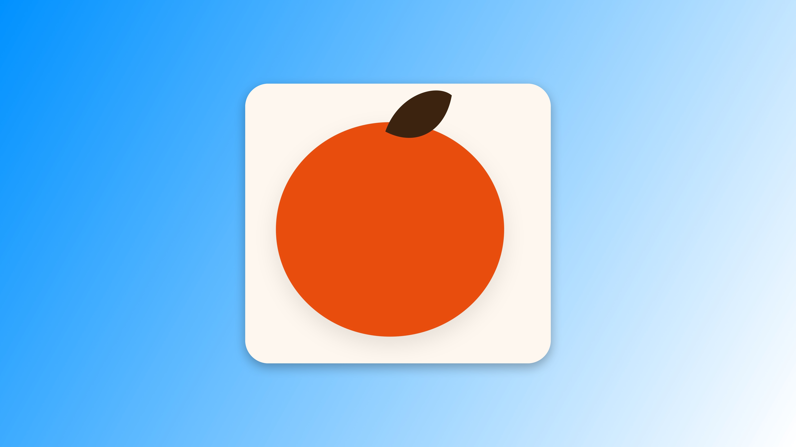
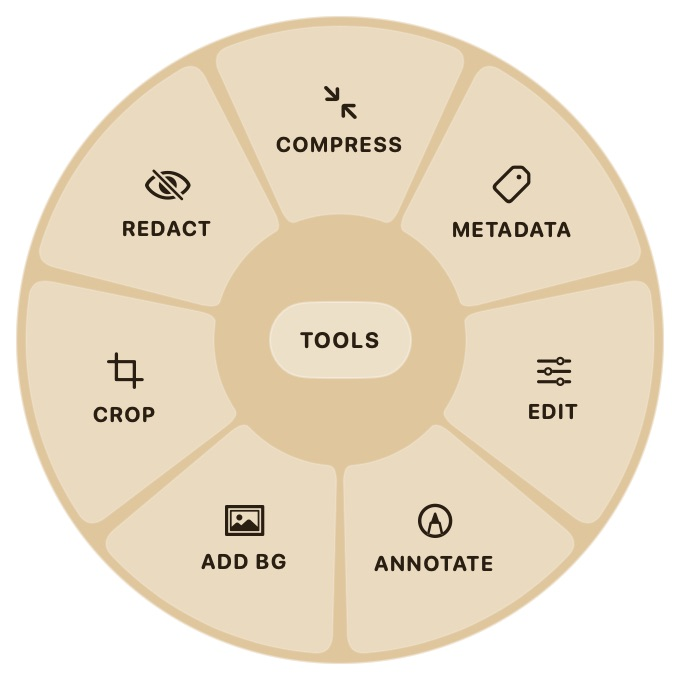

橘子 / CITRUS FOR MAC
Mac 文件处理
顺手一点。
A little less friction.


转换 · 裁剪 · 添加背景
实际应用界面 / Actual app UI · macOS preview
橘子 / CITRUS FOR MAC
A little less friction.


转换 · 裁剪 · 添加背景
实际应用界面 / Actual app UI · macOS preview